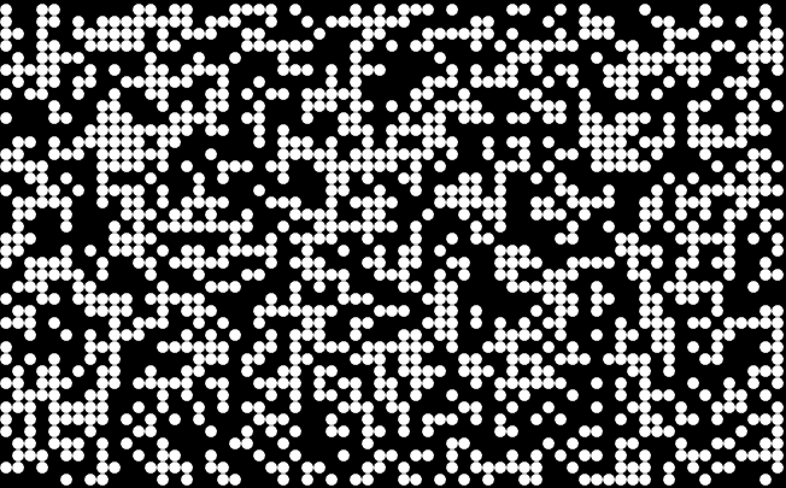
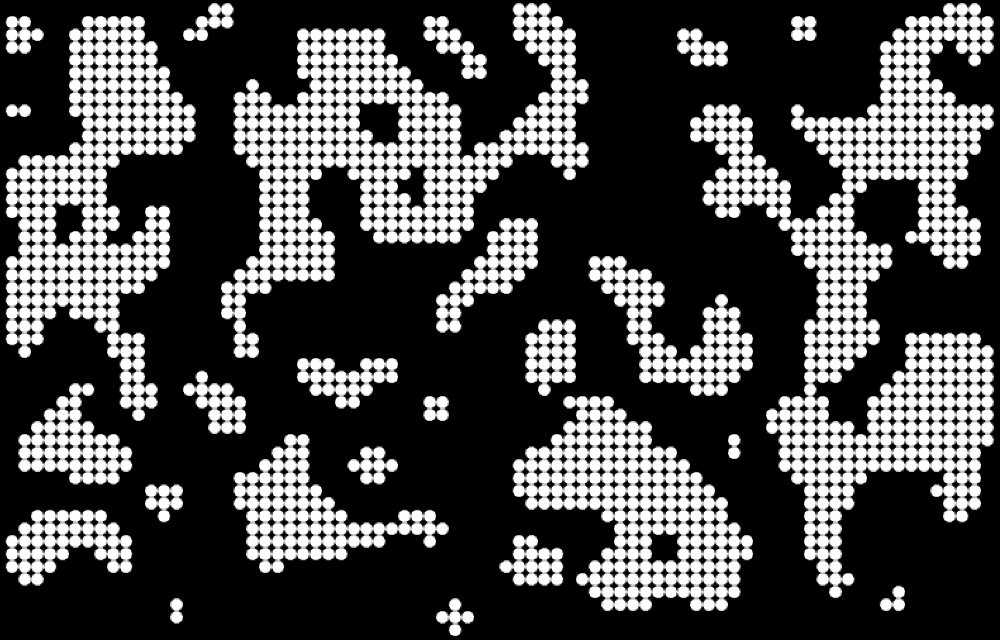

Photosensitivity warning: Images and videos on this page may trigger seizures in photosensitive individuals. Viewer discretion is advised. Return to homepage.
A lot of algorithms used for procedural generation need to start with noise, as represented by numbers in a random or semi-random pattern on a grid. Starting out, I didn't need anything special, random noise was good enough, so I wrote my noise function like this:
local noise = {}
function noise.new()
local self = {}
self.create_noise = function (grid)
for x = 1, #grid do
for y = 1, #grid do
if math.random() < 0.5 then
grid[x][y] = 0
else
grid[x][y] = 1
end
end
end
return grid
end
return self
end
return noise
Run of the mill, (pseudo)random noise.
Using this as a base can get decent results. Here's what it looks like after applying cellular automata, which I got from here and transcribed into Lua from (Java? C++? It occurs to me I don't know what language it is.)
It looks really pretty good to me. It could definitely be islands, forests, or caverns, and depending on how you use it, there are of course many ways to refine it from here. Here's my implementation in case you want to see it. But there is a problem using this to generate a lot of content, and it's that it is very uniform. Unless I'm changing other inputs on my algorithms, I'll always get something very similar. I'll never get a large forest clearing, or a single winding trail, or sparse trees dotting the landscape. It will always just be this blobby structure, more or less.
Generating "good" noise is apparently a huge topic unto itself, as it's used for more than procedural generation. It's used for shaders, movie CGI, scientific simulations, and other stuff. And while there's lots of algorithms already out there- Guassian noise, Perlin noise, Brownian noise, Worley noise... I didn't really want to use them. Partly because I don't understand them (recursive filters? hardcoded permutation tables?) and partly because I get sick of people telling me "don't reinvent the wheel." Look, if I didn't enjoy writing my own code, I'd be using Unity.
So I set out to make some noise. Since I'm such a smart guy- a wise man; a shaman, I decided the best way to do this would be to start punching numbers in randomly. And of course, what I got was... unexpected?
Okay, so I'll admit, it's not exactly what I was going for. But I like it! But what is going on here? Well, I was already taking a float and rounding it as my input. And since I knew that sine multiplied by time makes circles, I thought I'd use math.sin to make my noise, I dunno, circlier, or swirlier, something.
So, I took my table indexes, multiplied them by time, and calculated the sine, like so: math.sin(os.clock() * i * j) and immediately started getting some interesting stuff.
After that, I just started experimenting with different numbers, adding colors, changing shapes, etc.
Okay, so I haven't gotten a call from the fine folks at the Guggenheim yet. But that's okay. Remember, you're not failing to learn if you're failing to learn! Oh wait, without inflection, that's kind of ambiguous. I mean, failing in order to learn - not learning to fail, er, learn to... fool me... you can't get fooled again. Writing fail :P
Hope you've enjoyed reading this article as much as I enjoyed writing it, see you next time!